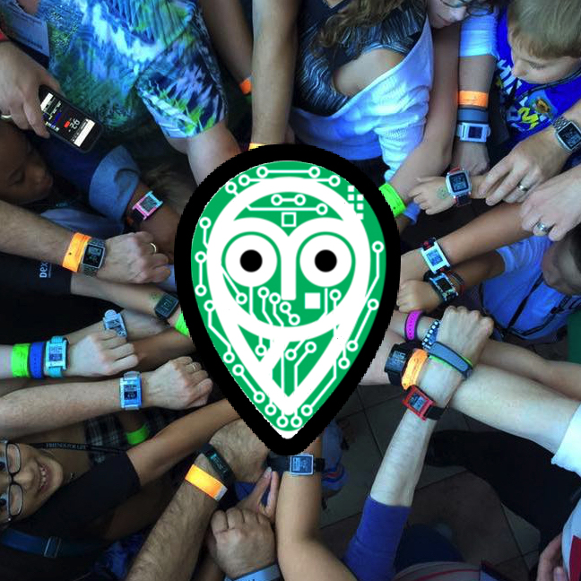

¡Pásate a la medición continua!

Nightscout es una plataforma que te permite visualizar tu glucosa en tiempo real desde cualquier movil, ordenador, tablet o smartwatch conectado a internet. Pero... ¿Qué es realmente? Es una plaforma formada por una base de datos, donde se almacenan los datos de glucosa que recibes de tu medidor continuo, y una página web donde puedes visualizar esos controles desde cualquier lugar y en timepo real.
Este sistema es comúnmente utilizado por padres de niños con diabetes para poder ver el azucar de sus hijos cuando estan en el cole o durmiendo, lo cual da mucha tranquilidad.
Además, te permite configurar alarmas de forma que tu movil te avise en caso de que tu peque este teniendo una hipoglucemia o hiperglucemia.
Nightscout coge los datos de glucosa que tu medidor continuo envia a tu movil cada 5 minutos, y los sube a la nube, de forma que puedas acceder a tu página web cuando quieras y donde quieras y asi poder ver tu glucosa en cualquier momento.
No te preocupes si no tienes ningún conocimiento de informática. Para montar Nightscout solo necesitas tener un rato libre, y seguir los pasos exactos para que todo quede perfecto.
A continuación te contamos todo lo que necesitas saber para poder utilizar Nightscout:
1. Un medidor continuo de glucosa (en esta web utilizaremos como ejemplo el Freestyle Libre + Miaomio).
2. Un movil con conexión a internet que recibirá la glucosa del medidor y la subirá a la nube. (El movil que recibe los controles directamente del medidor continuo es llamado "MASTER").
3. Un movil con conexión a internet que recibirá la glucosa de internet y donde se podrán visualizar los controles. (El movil que recibe los controles de internet es llamado "FOLLOWER").
A continuación te contamos todo lo que necesitas saber para configurar y poner en marcha tu página Nightscout:
1. Un ordenador con conexión a internet.
2. Una libreta o app donde apuntar todas las contraseñas que se irán generando durante el proceso.
3. No se necesitan conocimientos de informática, tan solo hace falta un rato libre y seguir los pasos exactos para que todo quede perfecto.